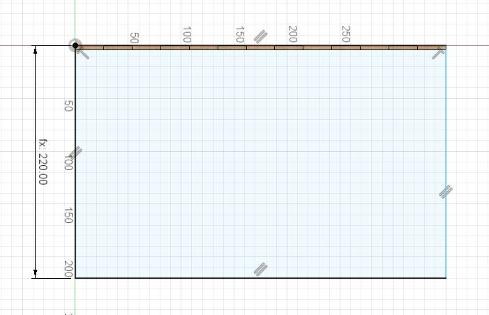
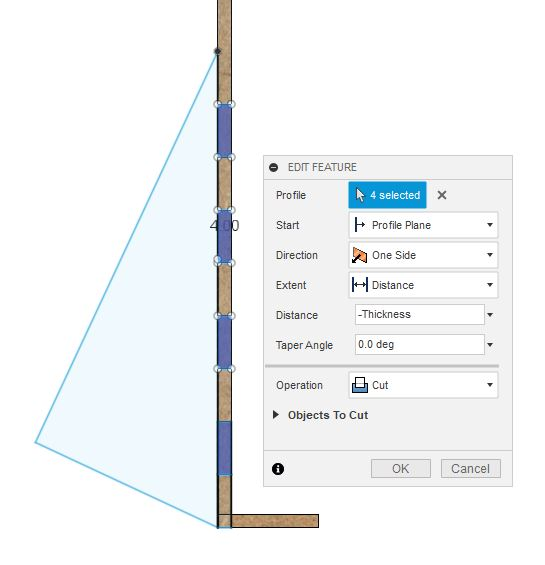

Computer-aided design and cutting
Parametric Design
To begin with, I decided to make a bookstand (lectern) for textbooks so that I can read them without having to lean over them and so that they take up less workspace. This should result in decreased strain on my neck and hopefully improve sleep quality somewhat. I will be using the model displayed in the following picture for reference (found on this website). It is a relatively simple construction, comprised of only 4 parts, but it is a thing I had been meaning to purchase and will be beneficial for me.

Preparation
As I have some experience with CAD modelling with Fusion 360 I felt that a short instruction video on parametric modelling would suffice as preparation for the technical part so I watched this video provided by Hafliði on the course webpage.
In order to get a better overview of the benefits and capabilities of laser cutting I watched two pre-recorded lectures from Neil Gershenfeld also provided on the course website. To maximize productivity I downloaded them in video format and set the playback speed to 1.5x. In the former lecture various CAD tools and their basic functions were showcased but I had decided to use Fusion 360 so that information was of limited use. In the latter lecture some fundamentals of laser cutting were covered and safety concerns adressed. New ultrasonic cutters were of particular interest as they allowed for greater cutting power.
Modelling
In order to familiarize myself with parametric modelling in Fusion 360 this video was of great use. I started with defining the parameters to be used on the bottom- and back panels as well as for the support pieces.
I began with sketching the bottom panel on which the book would rest. After measuring a thermodynamics textbook I concluded that a 350 mm wide base with a 30 mm lip would suffice.
I then extruded the sketch to match the thickness of the 4 mm panels.
A single finger's cross section was then sketched on the long edge of the bottom panel.
Using the rectangular pattern feature the sketch could then be pasted along the entire edge. This will ensure that if changes are made to the number of fingers that they will cover the entire area and not just a part of it.

A 3-point rectangle was then sketched, using the endpoints on the bottom panel and a parameter for the height of the back panel.
The sketch was then extruded as a new body as before.
As a result of the previous extrude feature, there is now interference between the two bodies where the fingers meet the back panel. To amend this, I used the combine modification feature and selected the operation cut.
The supports were then sketched. This proved to be the most complex piece as I had to ensure that changing the tilt angle would also change the lengths of the triangle. The parameters Depth_support, Angle_support and hypot were created to tackle this problem and can be seen in the parameter list above.
After cutting the fingers into the back panel the support sketch was extruded by a thickness of 4 mm as before.
To save some time, I constructed a plane in the middle of the object in order to mirror the recently created support piece.
I mirrored the finger cut feature first and then the body itself.
Finally, the assembly looks like this.
CAM Preparation
In order to prepare the model for CAM it is useful to individualize the assembly into its component parts. This short video shows clearly how to utilize the align modification tool to make all components flat and level. The result was as follows.

I wanted to export directly to a .svg file and avoid time consuming fixing of a .dxf file but couldn't immediately find a way to do it. A quick search on youtube led me to an instructional video on how to install an add-on to enable direct .svg export. The steps are as follows:
1. In the TOOLS tab, expand the ADD-INS menu and select Fusion 360 App Store.
2. In the App search bar type "origin" and press enter.
3. Sorting by most relevant, select the Shaper Utilities app.
4. Select a relevant OS option and then download on the right.
5. Run the .exe file and install the application.
There should now be a SHAPER icon in your tools menu that can be expanded to show the feature Export to Origin. When selected, you can click on any face to define the top cutting surface of a shape and export it as a .svg file.
I used Inkscape to import the four .svg files into a single file and tweaked it for laser cutting. Setting the canvas to 300x600 mm (maximum cutting area) and before setting the line width to 0.02 mm the image looked like this:
Cutting
As I approached the laser cutter, I was bewildered by the plethora of buttons and immediately proceded to ask Aron Óttarsson for directions on the operation of this wonderful machine.
The finalized .svg file was then exported as .pdf to the laser cutter drive and settings made according to the laser cutter specific requirements.
All seemed to go swimmingly...

...but for some reason there was a small space the laser had missed. This was easily cut with a knife however and had a negligible impact on the performance of this basic bookstand.
I expected it to be a bit unstable, but it proved to be very sturdy.
Original Files
Here you can download the original design files.
.obj file .svg file{kind=link}
Search Engine Keywords
bruh<(p>